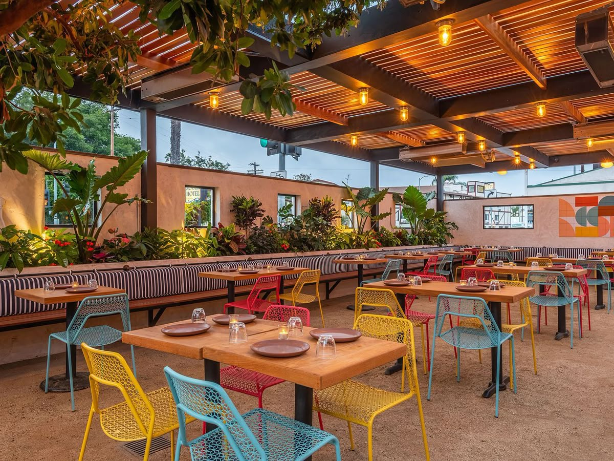

Bienvenue chez TERANGA FOOD, un restaurant qui incarne toute la richesse et l’authenticité de la cuisine sénégalaise. Inspiré de la tradition et du savoir-faire local, TERANGA FOOD vous propose une expérience culinaire unique où chaque plat raconte une histoire, celle d’un héritage transmis de génération en génération. Chez TERANGA FOOD, la qualité est une priorité. Nous sélectionnons avec soin des ingrédients frais et locaux afin de garantir des repas savoureux, sains et préparés dans le respect strict des normes d’hygiène. Chaque détail compte pour offrir à nos clients une expérience irréprochable. Fidèle à la célèbre hospitalité sénégalaise, appelée “teranga”, notre restaurant met un point d’honneur à offrir un accueil chaleureux et convivial. Dès votre arrivée, vous êtes reçus avec le sourire dans une ambiance familiale où le respect et le bien-être du client sont essentiels. Notre équipe est composée de professionnels passionnés, des cuisiniers aux serveurs, qui travaillent avec engagement pour vous offrir un service de qualité. Leur objectif est simple : vous faire vivre un moment agréable et mémorable à chaque visite. L’ambiance de TERANGA FOOD allie tradition et modernité. Entre décoration inspirée de la culture sénégalaise, musique douce et cadre confortable, tout est pensé pour créer un espace accueillant et relaxant. TERANGA FOOD, c’est bien plus qu’un restaurant : c’est un lieu de partage, de découverte et de plaisir, où la cuisine sénégalaise est mise à l’honneur avec passion.